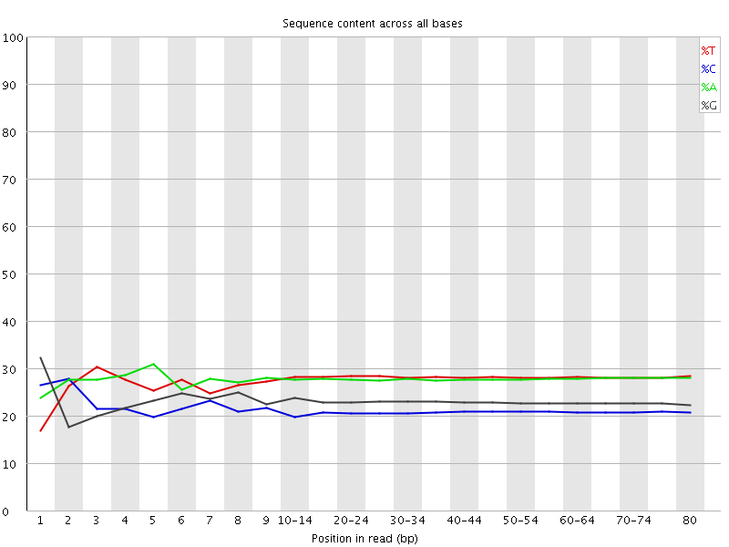
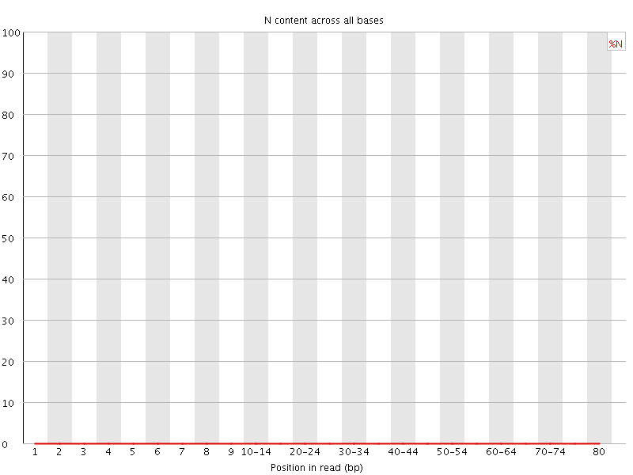

![[OK]](Icons/tick.png) Basic Statistics
Basic Statistics
| Measure | Value |
|---|---|
| Filename | RA034_R1.fq.gz |
| File type | Conventional base calls |
| Encoding | Sanger / Illumina 1.9 |
| Total Sequences | 8816127 |
| Filtered Sequences | 0 |
| Sequence length | 80 |
| %GC | 44 |
Per base sequence quality
Per sequence quality scores
Per base sequence content

![[FAIL]](Icons/error.png) Per base GC content
Per base GC content
Per sequence GC content
Per base N content

Sequence Length Distribution
Sequence Duplication Levels
Overrepresented sequences
| Sequence | Count | Percentage | Possible Source |
|---|---|---|---|
| GGGGGGGGGGGGGGGGGGGGGGGGGGGGGGGGGGGGGGGGGGGGGGGGGG | 109433 | 1.2412820278110783 | No Hit |
| AGGGGGGGGGGGGGGGGGGGGGGGGGGGGGGGGGGGGGGGGGGGGGGGGG | 9463 | 0.10733738295739162 | No Hit |
Kmer Content

| Sequence | Count | Obs/Exp Overall | Obs/Exp Max | Max Obs/Exp Position |
|---|---|---|---|---|
| GGGGG | 13561865 | 31.157452 | 38.817635 | 6 |
| CCCTC | 3351980 | 9.057971 | 12.738483 | 15-19 |
| CCTCA | 3953775 | 8.082129 | 47.186806 | 1 |
| CTCAG | 4152415 | 7.760981 | 43.23469 | 2 |
| TCAGC | 3930025 | 7.345328 | 42.119457 | 3 |
| CTGAG | 4211605 | 7.1972337 | 28.611616 | 9 |
| GCTGA | 4042555 | 6.908343 | 28.307795 | 8 |
| GAGGG | 3625885 | 6.8918967 | 10.916161 | 4 |
| TCCCT | 3270220 | 6.642077 | 9.413992 | 15-19 |
| CAGCT | 3360040 | 6.2800097 | 9.801028 | 4 |
| ATCCC | 3038510 | 6.211185 | 9.66874 | 9 |
| TGAGG | 3969115 | 6.201743 | 9.260269 | 3 |
| AGCTG | 3594680 | 6.1429677 | 7.224207 | 40-44 |
| AGGGA | 3664790 | 5.7630982 | 9.185465 | 5 |
| GATCC | 2898805 | 5.4179487 | 8.451312 | 8 |
| GGGAT | 3256185 | 5.0877895 | 7.4403863 | 6 |
| GGATC | 2947020 | 5.0361776 | 7.763627 | 7 |
| AAAAA | 4405150 | 3.9229643 | 4.513181 | 70-74 |
| TTTTT | 4462310 | 3.848388 | 4.590937 | 3 |
| CCCAG | 1136770 | 2.826774 | 5.2478 | 1 |
| CAGCC | 1048185 | 2.6064918 | 11.596486 | 3 |
| GCCTC | 880095 | 2.1745083 | 5.1269364 | 1 |
| GCCTG | 851905 | 1.9245305 | 5.3828764 | 1 |
| CAGCG | 818780 | 1.8616059 | 34.520172 | 4 |
| CGCTG | 786115 | 1.7759049 | 34.023956 | 7 |
| AGCGC | 754720 | 1.715957 | 34.166912 | 5 |
| GCGCT | 742005 | 1.6762564 | 33.93808 | 6 |
| AGCCC | 613425 | 1.5253867 | 9.115839 | 4 |
| GCCCT | 578830 | 1.4301534 | 8.473718 | 5 |
| AGGGG | 560170 | 1.0647424 | 6.3386245 | 1 |